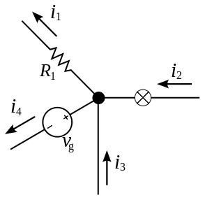
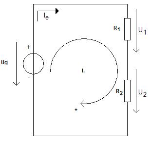

|
Egy tetszőlegesen bonyolult villamos hálózat (áramkör) elemeire egyenként
alkalmazható az Ohm-törvény, hiszen az összetartozó áram,
feszültség és ellenállás mennyiségek
közötti kapcsolatot mutatja. Viszont a több elemből álló hálózatnál a Kirchhoff-törvények
nyújtanak segítséget, amelyek leegyszerűsíthetik a számítási műveleteket. Bonyolultabb áramkörök
esetén a Kirchhoff egyenletrendszerek megoldása rendkívül hosszadalmas, ezért célszerűbb a
Norton-tétel , Thévenin-tétel, Millman-tétel, vagy a szuperpozíció
tételének alkalmazása.
A csomóponti törvény:
|
Kirchhoff I. törvénye
A csomóponti törvény párhuzamos (elágazó) áramkörökre
vonatkozik. Az elágazásnál csomópont
keletkezik. A törvény értelmében a csomópontba befolyó áramok
összege megegyezik az onnan
elfolyó áramok összegével. A törvény alapja az, hogy egy villamos hálózat
csomópontjaiban nincs
töltésfelhalmozódás (forrásmentes hely).
Az ábrán a csomópontot egy befeketített kör jelöli. A csomópont
egyben az elektromos kötés helyét is jelöli.
A csomópontnak létezik még egy fontos jellemzője, az, hogy
elektromos
potenciállal rendelkezik. Ez a potenciál egy másik csomóponthoz képest mérhető,
nagysága függ az
összekötő elem(ek) ellenállás-értékétől, és az átfolyó áram nagyságától. A
potenciálkülönbség
átfolyó áramot hoz létre egy ellenálláson, de azt is mondhatjuk, hogy az átfolyó
áram hatására
jön létre az ellenállás két végpontja között potenciálkülönbség.
|
|

|
|
Bármely csomópontba befolyó és onnan elfolyó áramok előjelhelyesen vett
összege
nulla. Ha a befolyó áramot pozitívnak, az elfolyót negatívnak vesszük,
akkor:
-i1 + i2 - i4 + i3 = 0
Ebből következik, hogy
i1 + i4 = i2 + i3
|
|
A huroktörvény:
Kirchhoff II. törvénye
Sorosan kapcsolt áramköri elemekre vonatkozik. A törvény értelmében bármely
zárt hurokban a feszültségek előjeles összege nulla.
Az előjel megállapítása úgy történik, hogy egy tetszőleges irányítású
"körüljárási irányt" veszünk fel. A körüljárási irányt egy be nem záródó körvonal végén a nyíl
jelzi. Ha az áramkör csak egy hurokból áll, a kör középpontjába írt "+" mutatja, hogy az ilyen
irányú feszültségeket tekintjük pozitív előjelűnek (azok a feszültségek pedig, melyek iránya a
körüljárási iránnyal ellentétes, negatív előjelűek). Ha az áramkör több hurokból áll, a kör
középpontjába a hurok sorszáma kerül (az ábrán I.). Zárt hurokban a feszültségforrások összege
megegyezik a feszültségesések összegével.
Az egyesített Kirchhoff-törvény
|
Mivel mindkét törvény mindenféle hálózatra igaz, bátran lehet
alkalmazni őket ismeretlen feszültségek és/vagy áramok kiszámítására. A most
megismertetett két módszerrel bármilyen, tetszőlegesen bonyolult villamos hálózatot
ki tudunk számítani, feltéve, ha adottak a megfelelő számú adatok (adatok alatt
feszültségek, áramok, ellenállások értékei értendők).
Csak annyit kell tennünk, hogy minden hurokra és minden
csomópontra felírjuk a
törvényszerűségeket, majd az „ahány ismeretlen, annyi egyenlet” módszerrel az összes
ismeretlen feszültséget és áramot ki tudjuk számolni.
|
|

|
|
A körüljárási irányt az óramutató járásával megegyezőnek választottuk. Az
ezzel megegyező irányú részfeszültségek pozitívak:
– Ug + U1 + U2 = 0
Ebből következik, hogy
Ug = U1 + U2
|
|
|